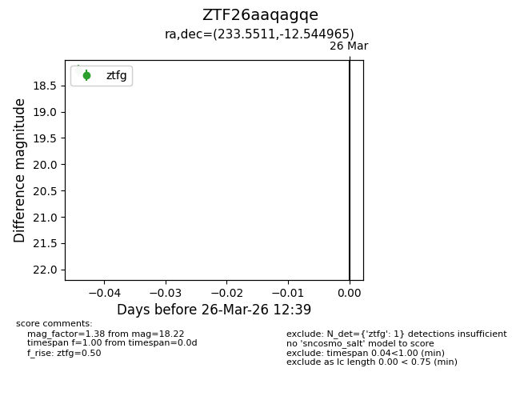
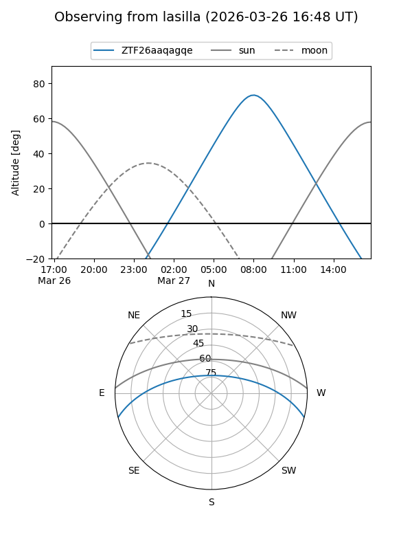
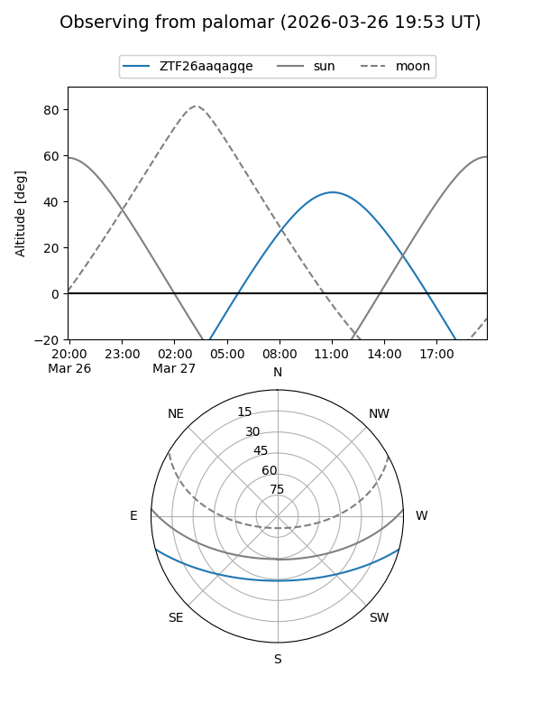

ZTF26aaqagqe
Target ZTF26aaqagqe at 2026-03-26 12:41
Aliases and brokers:
FINK: link
Lasair: link
ALeRCE: link
alt names
ZTF26aaqagqe (ztf,fink_ztf)
Coordinates:
equatorial (ra, dec) = 233.5511,-12.54497
equatorial (HMS+DMS) = 15:34:12.26,-12:32:41.88
galactic (l, b) = (353.1027,+34.03247)
Flags:
Photometry:
last ztfg=18.22
1 ztfg detections
Lightcurve

Visibility


Additional plots